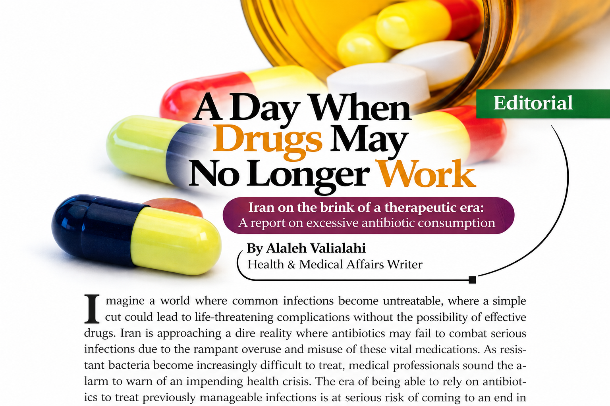
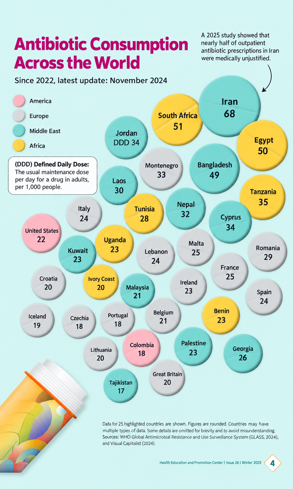

This science communication article highlights one of the most important challenges in modern medicine: antimicrobial resistance (AMR). The article discusses how inappropriate antibiotic consumption and misuse can accelerate the emergence of resistant microorganisms and threaten the effectiveness of existing treatments. By introducing the relationship between antibiotic pressure and bacterial adaptation, this work explains how resistant bacterial populations may develop and spread, creating serious challenges for healthcare systems worldwide. The article presents global antibiotic consumption patterns and emphasizes the importance of antimicrobial stewardship, rational antibiotic use, public awareness, and preventive strategies to preserve the effectiveness of essential antimicrobial therapies. Written for a nationwide educational audience, this article translates microbiological concepts into an accessible scientific narrative and highlights the urgent need for responsible antibiotic practices.
Antibiotics have transformed modern medicine, but their effectiveness depends on responsible use. Understanding antimicrobial resistance is essential for protecting future generations from difficult-to-treat bacterial infections.